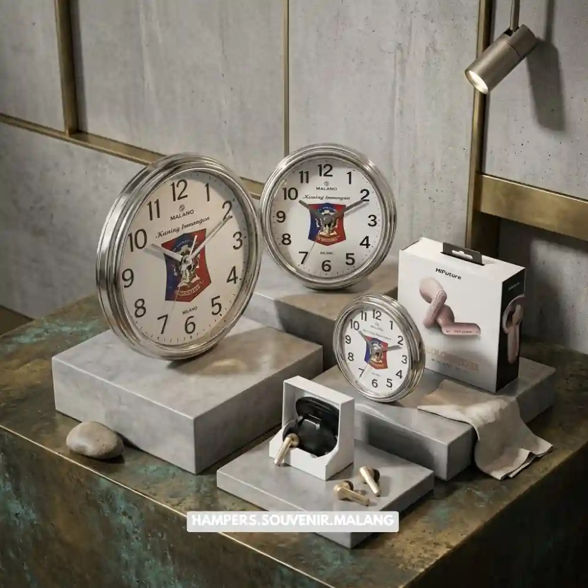

Jasa hampers kantor Malang adalah layanan penyediaan parcel dan hadiah korporat siap pakai untuk klien, mitra bisnis, serta karyawan, lengkap dengan opsi custom logo dan pengiriman langsung ke alamat tujuan.
- Jasa hampers kantor Malang melayani kebutuhan hadiah untuk klien, karyawan, dan relasi bisnis dengan proses pemesanan yang praktis.
- Setiap paket dapat disesuaikan dengan identitas merek perusahaan melalui custom logo, kartu ucapan, dan pemilihan isi hampers.
- Layanan ini menghemat waktu tim internal karena seluruh proses, dari kurasi produk hingga pengiriman, ditangani oleh penyedia jasa.
- Harga hampers kantor bervariasi tergantung isi, kemasan, dan jumlah pesanan, sehingga cocok untuk berbagai skala anggaran perusahaan.
- Pemesanan dapat dilakukan jauh hari sebelum momen penting seperti akhir tahun, hari raya, atau acara perusahaan.
Ketika sebuah perusahaan di Malang perlu mengirimkan hadiah kepada puluhan klien sekaligus, pertanyaan pertama yang muncul biasanya adalah bagaimana caranya agar hadiah tersebut tetap terlihat elegan tanpa menyita waktu tim internal.
Jasa hampers kantor Malang menjawab kebutuhan ini dengan menyediakan paket hampers siap kirim yang sudah dikurasi khusus untuk kebutuhan korporat, mulai dari pemilihan isi, kemasan bertema profesional, hingga opsi pencetakan logo perusahaan pada kotak atau label.
Dengan menggunakan jasa ini, perusahaan tidak perlu lagi berbelanja satu per satu, mengemas sendiri, atau mengurus pengiriman ke banyak alamat berbeda.
Kebutuhan akan hadiah korporat yang praktis namun tetap mencerminkan citra profesional terus meningkat, terutama menjelang akhir tahun, hari raya keagamaan, atau ketika perusahaan merayakan pencapaian tertentu bersama klien dan karyawan.
Di sinilah peran jasa hampers kantor menjadi penting, karena penyedia layanan sudah memahami standar kemasan, pemilihan isi yang sesuai dengan segmen penerima, hingga jadwal pengiriman yang harus tepat waktu agar momen tidak terlewat.
Apa Itu Jasa Hampers Kantor dan Siapa yang Membutuhkannya?
Jasa hampers kantor adalah layanan penyediaan hadiah berbentuk parcel yang dirancang khusus untuk kebutuhan bisnis, mulai dari kurasi isi, desain kemasan, hingga pengiriman ke banyak alamat sekaligus.
Layanan ini pada dasarnya menjembatani kebutuhan perusahaan yang ingin memberikan apresiasi kepada klien, mitra, atau karyawan tanpa harus mengurus prosesnya secara manual.
Perusahaan yang paling sering menggunakan jasa hampers kantor antara lain perusahaan swasta yang rutin menjaga hubungan dengan klien, instansi yang mengadakan acara tahunan, hingga startup yang ingin memberikan kesan profesional sejak awal berdiri.
Selain itu, divisi HRD juga kerap memanfaatkan layanan ini untuk memberikan apresiasi kepada karyawan pada momen tertentu, seperti ulang tahun perusahaan atau pencapaian target kerja.
Primary entity dari layanan ini, yaitu hampers kantor itu sendiri, umumnya berisi kombinasi makanan ringan premium, minuman, aksesoris kantor, atau produk lokal khas Malang yang dikemas dalam satu paket bertema elegan.
Batasan yang perlu dipahami adalah bahwa kualitas isi dan kemasan sangat bergantung pada anggaran yang dialokasikan, sehingga penting bagi perusahaan untuk menentukan kisaran budget sejak awal sebelum melakukan pemesanan.
Mengapa Perusahaan Memilih Jasa Hampers Kantor Dibanding Menyiapkan Sendiri?
Menggunakan jasa hampers kantor memberikan efisiensi waktu, konsistensi kualitas, dan tampilan profesional yang sulit dicapai jika hadiah disiapkan secara mandiri oleh tim internal perusahaan.
Salah satu alasan utama perusahaan beralih ke jasa hampers kantor adalah efisiensi. Menyiapkan puluhan hingga ratusan paket hadiah secara manual membutuhkan waktu, tenaga, dan koordinasi lintas divisi yang tidak sedikit.
Dengan menyerahkan proses ini kepada penyedia jasa, tim internal dapat fokus pada pekerjaan inti mereka sementara kebutuhan hadiah tetap terselesaikan tepat waktu.
Selain efisiensi, konsistensi kualitas juga menjadi pertimbangan penting. Ketika perusahaan mengirimkan hampers kepada banyak klien sekaligus, setiap paket harus terlihat seragam dan rapi agar tidak menimbulkan kesan hadiah dibuat asal-asalan.
Penyedia jasa hampers kantor yang berpengalaman biasanya sudah memiliki standar kemasan dan proses quality control sehingga setiap paket yang dikirim memiliki tampilan yang sama baiknya.

Tren umum di industri corporate gifting juga menunjukkan bahwa permintaan hampers korporat cenderung meningkat signifikan menjelang kuartal terakhir tahun, seiring banyaknya perusahaan yang mempersiapkan hadiah akhir tahun untuk klien dan karyawan.
Fenomena ini membuat pemesanan lebih awal menjadi strategi yang bijak agar perusahaan tidak kehabisan slot produksi menjelang momen puncak.
Baca Juga: Untuk memahami lebih jauh jenis hadiah yang cocok diberikan kepada mitra bisnis, Anda dapat membaca ulasan mengenai souvenir kantor elegan untuk mitra bisnis yang membahas pemilihan produk sesuai segmen penerima.
Bagaimana Proses Pemesanan Hampers Kantor Berlangsung?
Proses pemesanan hampers kantor umumnya dimulai dari konsultasi kebutuhan, pemilihan isi dan kemasan, penyesuaian custom logo, produksi paket, hingga pengiriman ke alamat yang ditentukan perusahaan.
Tahap pertama biasanya berupa konsultasi antara perusahaan dan penyedia jasa untuk menentukan tujuan pemberian hampers, jumlah penerima, serta kisaran anggaran yang tersedia.
Setelah kebutuhan jelas, penyedia jasa akan menawarkan beberapa pilihan paket yang dapat disesuaikan, mulai dari isi produk hingga desain kemasan.
Tahap berikutnya adalah penyesuaian identitas merek, seperti pencetakan logo perusahaan pada kotak, label, atau kartu ucapan yang disertakan dalam paket.
Proses ini penting bagi perusahaan yang ingin memastikan hadiah yang diberikan tetap merepresentasikan citra brand secara konsisten.
Setelah desain disepakati, penyedia jasa akan masuk ke tahap produksi dan pengemasan, kemudian dilanjutkan dengan pengiriman ke alamat tujuan.
Untuk pemesanan dalam jumlah besar, disarankan melakukan pemesanan setidaknya beberapa minggu sebelum tanggal pengiriman yang diinginkan agar seluruh proses dapat berjalan dengan matang tanpa terburu-buru.
Berapa Kisaran Biaya Jasa Hampers Kantor di Malang?
Biaya jasa hampers kantor di Malang bervariasi tergantung jenis isi, tingkat kustomisasi, kualitas kemasan, dan jumlah paket yang dipesan, sehingga tersedia opsi untuk berbagai skala anggaran perusahaan.
Secara umum, harga hampers dipengaruhi oleh beberapa faktor utama, yaitu jenis produk di dalamnya, bahan kemasan yang digunakan, tingkat kustomisasi seperti cetak logo atau kartu ucapan personal, serta jumlah unit yang dipesan sekaligus.
Perusahaan yang memesan dalam jumlah besar biasanya dapat menikmati penyesuaian harga per unit yang lebih efisien dibanding pemesanan satuan.
Penting untuk dipahami bahwa harga murah tidak selalu berarti tidak berkualitas, dan harga mahal tidak selalu menjamin kepuasan penerima.
Faktor yang lebih menentukan adalah kesesuaian isi hampers dengan segmen penerima, misalnya hampers untuk direksi mitra bisnis tentu memiliki standar berbeda dibanding hampers apresiasi untuk karyawan internal.
Baca Juga: Rincian lebih lanjut mengenai komponen biaya dan cara mengalokasikan anggaran secara efisien dapat dilihat pada ulasan biaya hampers kantor untuk karyawan dan klien yang membahas topik ini secara lebih mendalam.
Kesalahan Umum yang Perlu Dihindari Saat Memesan Hampers Kantor
Kesalahan paling sering terjadi saat memesan hampers kantor adalah pemesanan terlalu mendekati tanggal pengiriman, kurang memperhatikan segmen penerima, dan mengabaikan konsistensi identitas merek pada kemasan.
Salah satu kesalahan yang paling umum adalah melakukan pemesanan terlalu dekat dengan momen pengiriman, terutama saat musim ramai seperti akhir tahun atau hari raya. Keterlambatan ini dapat berdampak pada kualitas produksi maupun ketepatan waktu pengiriman ke penerima.
Kesalahan berikutnya adalah tidak mempertimbangkan segmen penerima secara spesifik. Hampers untuk klien korporat besar tentu memerlukan pendekatan yang berbeda dibanding hampers untuk karyawan internal, baik dari sisi isi produk maupun tampilan kemasan. Mengabaikan perbedaan ini dapat membuat hadiah terkesan kurang tepat sasaran.
Terakhir, banyak perusahaan yang melewatkan aspek konsistensi identitas merek, seperti tidak menyertakan logo perusahaan atau kartu ucapan resmi. Padahal, elemen kecil ini justru yang membuat penerima mengingat perusahaan pengirim dengan kesan yang lebih profesional.
Kapan Waktu Terbaik Mengirim Hampers Kepada Klien dan Karyawan?
Waktu terbaik mengirim hampers kantor umumnya bertepatan dengan momen penting seperti akhir tahun, hari raya keagamaan, ulang tahun perusahaan, atau pencapaian kerja sama bisnis tertentu.
Setiap momen memiliki nuansa pesan yang berbeda. Hampers akhir tahun biasanya membawa pesan apresiasi atas kerja sama sepanjang tahun, sementara hampers hari raya lebih menonjolkan nuansa kehangatan dan silaturahmi.
Di sisi lain, hampers yang dikirim saat pencapaian kerja sama bisnis tertentu, seperti penandatanganan kontrak baru, lebih menonjolkan pesan penghargaan atas kepercayaan yang diberikan mitra.
Baca Juga: Pembahasan lebih detail mengenai berbagai momen pengiriman hampers dan pesan yang tepat untuk masing-masing situasi dapat ditemukan pada ulasan momen tepat mengirim hampers kantor untuk klien dan karyawan.
Jasa hampers kantor Malang membantu perusahaan menghadirkan hadiah korporat yang rapi, konsisten, dan mencerminkan citra profesional tanpa harus mengurus prosesnya secara manual. Mulai dari konsultasi kebutuhan, kustomisasi identitas merek, hingga pengiriman ke banyak alamat, seluruh proses dapat diserahkan kepada penyedia jasa yang berpengalaman.
Jika perusahaan Anda sedang mempersiapkan hadiah untuk klien, mitra bisnis, atau karyawan, kini saatnya mempercayakan kebutuhan tersebut kepada tim yang memahami standar hampers korporat. Hubungi Hampers Malang sekarang melalui hampersmalang.web.id untuk konsultasi paket dan mendapatkan penawaran terbaik sesuai kebutuhan perusahaan Anda.
Tanya Jawab Seputar Jasa Hampers Kantor
Ya, sebagian besar penyedia jasa hampers kantor di Malang menawarkan opsi custom logo pada kotak, label, atau kartu ucapan sesuai identitas merek perusahaan.
Waktu produksi bervariasi tergantung jumlah pesanan dan tingkat kustomisasi, sehingga disarankan memesan jauh sebelum tanggal pengiriman yang diinginkan.
Bisa, layanan hampers kantor umumnya mendukung pengiriman ke banyak alamat sekaligus sesuai daftar penerima yang diberikan perusahaan.
Hampers untuk klien biasanya menonjolkan kesan eksklusif dan profesional, sementara hampers untuk karyawan lebih menekankan kehangatan dan apresiasi internal.
Sebagian penyedia jasa tetap melayani pemesanan dalam jumlah kecil, namun ketersediaan dapat bergantung pada kapasitas produksi saat itu.

Butuh Hampers Kantor?
Solusi Hampers & Corporate Gift Kreatif di Malang Raya.
Ditulis oleh Tim Maroon Souvenir
Sahabat mahasiswa dan pelaku bisnis di Malang Raya. Berpengalaman menangani merchandise event kampus, instansi pemerintahan, dan hotel berbintang di Batu.